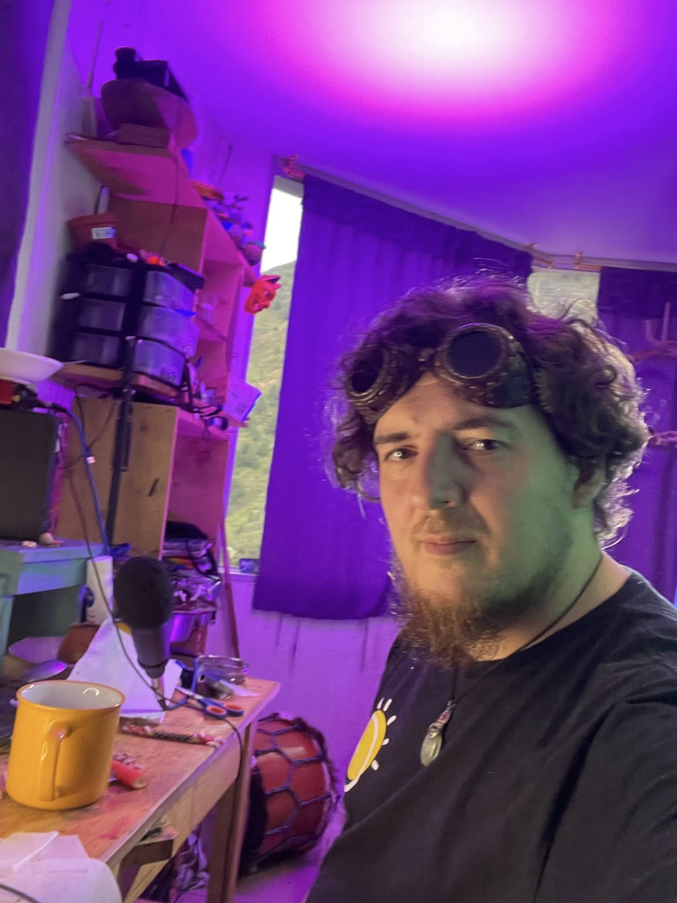

2012–2013
2012 se conserva como antecedente retrospectivamente documentado; desde 2013 existe documentación contemporánea de La Casa del Duende junto a Catalina Lucz-Ligeti.

Artista, autor, gestor cultural e investigador independiente argentino radicado en Baños de Agua Santa, Ecuador. Junto a Catalina Lucz-Ligeti desarrolla un proceso creativo situado desde 2012; el primer núcleo documental contemporáneo verificable localizado de La Casa del Duende corresponde a 2013.
Una práctica sostenida que une oficio artístico, espacios culturales visitables, publicaciones, documentación y producción de conocimiento independiente.
2012 se conserva como antecedente retrospectivamente documentado; desde 2013 existe documentación contemporánea de La Casa del Duende junto a Catalina Lucz-Ligeti.
Apertura de La Aldea Mágica, jardín artístico e instalación inmersiva donde la obra se expande al espacio.
Publicación de la Guía definitiva sobre duendes, Vol. 1 y consolidación del archivo documental.
Expansión del Duendismo Cultural, el Observatorio Cultural Independiente y tres recorridos interpretativos: español, English Audio Guide y Aventura KIDS de nueve estaciones.
La creación se despliega en esculturas, instalaciones, recorridos, libros, sonido y espacios vivos construidos con Catalina Lucz-Ligeti.
Proyecto artístico fundacional, taller, archivo y espacio de encuentro. Su experiencia presencial se visita dentro de La Aldea Mágica, en Calle Oriente, sector Coliseo.
Expansión recorrible de La Casa del Duende donde esculturas, vegetación, relato y experiencia familiar dialogan con el territorio.
Página de referencia que diferencia la obra artística contemporánea de las leyendas y mitologías anteriores.
Investigación independiente con identificador académico, publicaciones de acceso abierto y una línea crítica sobre cultura, representación y territorio.
Libros, ensayos, informes técnicos, audiolibros y expedientes documentales desarrollados como parte de una investigación situada.
Práctica contemporánea que reúne oficio, ética de la bondad, pedagogía del asombro, archivo y objeto cultural activador.
Red de observación, documentación y pensamiento crítico sobre derechos culturales, participación y territorio.
Documental en producción sobre creación, apropiación, turismo e invención de tradición en Baños de Agua Santa.
Propuestas para instituciones, espacios culturales, proyectos turísticos responsables, artistas y equipos independientes.
Documentación, archivos, informes, cronologías y análisis territorial.
Guion, diseño de recorridos, señalética, experiencias QR y producción de contenidos. En 2026 la experiencia de La Aldea Mágica funciona en español, inglés y Aventura KIDS.
Desarrollo de personajes, talleres, conferencias, curaduría y proyectos expositivos.
Para colaboraciones académicas, curatoriales, artísticas, audiovisuales o culturales:
También pueden coordinarse visitas de estudio a La Casa del Duende y La Aldea Mágica en Baños de Agua Santa, Ecuador.